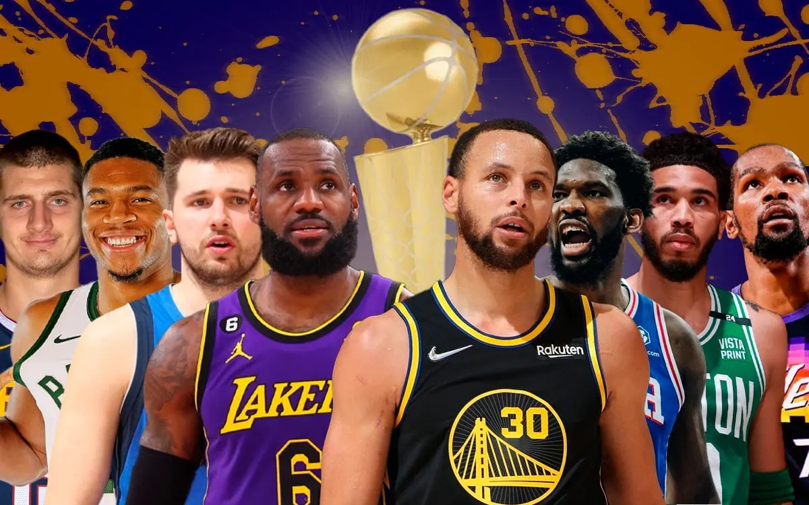

O jogo teve origem em dezembro de 1891 e foi uma criação do professor de educação física James Naismith. O fim do ano é o período de inverno no hemisfério norte e costuma ser bastante rigoroso. Nesse contexto, o inventor do basquete trabalhava no Springfield College, em Massachusetts, nos Estados Unidos.Pela dificuldade de praticar esporte ao ar livre, o professor James Naismith (1861-1940) recebeu do diretor da instituição a tarefa de criar uma atividade em que os alunos poderiam treinar em um local fechado.
Assim que recebeu essa missão, pensou em descartar jogos que tivessem muito contato físico ou precisasse usar os pés. Foi assim que o professor escreveu 13 regras básicas, inclusive a utilização de um cesto de pêssegos pendurado a 10 pés (o equivalente a 3,05 metros de altura). Por outro lado, naquele momento a quadra que James planejou tinha apenas metade do tamanho das usadas hoje em dia.

NBA
Sigla para "National Basketball Association" é a liga de basquete amêricana, conhecida por seus super astros e jogadores famosos, é a maior e melhor liga de basquete do mundo, foi criada em 6 de Junho de 1946 e atualmente tem 30 equipes na competição sendo 15 na conferencia Oeste e 15 na conferencia Leste.
Sua temporada regular tem 82 jogos e após sua conclusão acontece a fase de playoffs, a liga tem grandes idolos como Michael Jordan, Kobe bryant, Bill Russel, Wilt Chamberlain, Lebron James e muitos outros. Seu atual campeão é o Denver Nuggets que liderados por Nikola Jokic bateu o Miami Heat nas finais e conseguiram seu primeiro título.